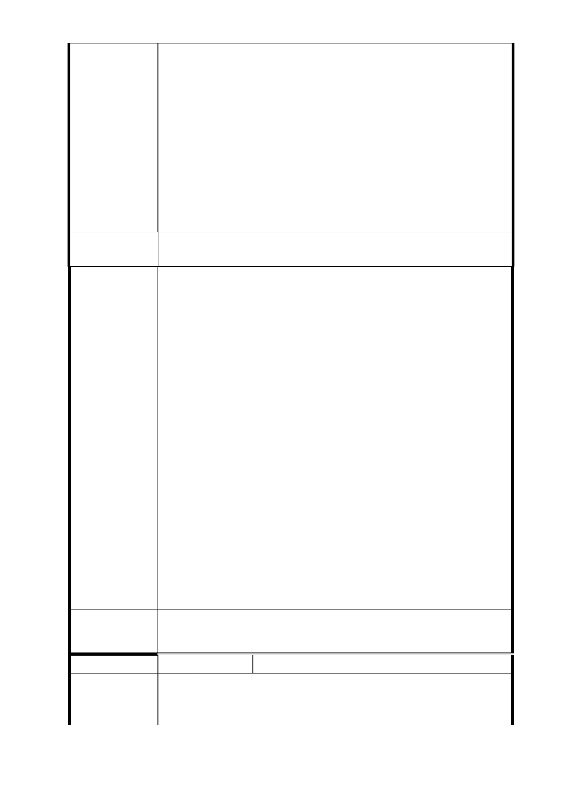

轉舵，把原本民眾所寄望的一個好事搞得太不像話，他們不
願溝通怕麻煩的心態真是可議，若這樣下去造成被排除的其
他四樓住戶（見附圖）無法改建，而遺害萬年，這些罪惡都
該由台北市政府來承受。
三、都市更新之政策「一坪換一坪」的辦法是市府自己為了
鼓勵「都更」所訂出來的，民眾的房子提供配合交通建設而
要求達到此一目的亦是最基本要求與心願，您能說百姓無理
或不對嗎？但願市府能用心地去解決此一問題，否則依目前
所計畫去完成，老百姓所得到的很不滿意，其改建後的景觀
亦不堪入目，那將是一個雙輸的局面。
建議辦法
1.同編號 3、4-1 研析意見。
2.本府捷運局依據信義線東延段專案小組委員 101 年 7 月 9
日現場會勘原則：「即若仍傾向辦理聯合開發則中央七層
樓建築物應予納入為宜，否則就朝僅留設捷運所需必要設
施進行劃設」辦理，故本府捷運局就替選方案範圍進行研
析，分為兩區塊，西端通風井 Y 係建議以最小面積採徵收
方式取得(面積約 292 ㎡)，東端最小用地範圍(面積約 1374
㎡)辦理土地開發並設置出入口及通風井。後經本市都市計
畫委員會 103 年 2 月 21 日召開信義線東延段都市計畫變更
市 府 回 應 案第 5 次專案小組審查意見略以：「(一)本案用地變更部
意 見 分同意依市府捷運局於簡報中所擬建議，即…『R04 站南
側捷二用地，維持公展範圍（基地面積 3,328 ㎡），並辦
理土地開發』、…續提委員會（大會）審議。(二)有關 R04
站南側捷二用地維持公展範圍並辦理土地開發一項，針對
該範圍內七層樓建物納入聯合開發之必要性及不納入聯合
開發未來辦理都市更新之限制等問題，請捷運局持續與陳
情人溝通協調。」，故本府捷運局會再與七層建物之土地
所有權人於 103 年 3 月 25 日召開協議會議，已將協調會溝
通與協調情形，彙整後提本市都市計畫委員會審查，仍依
都市計畫委員會審議決議辦理。
委 員 會 決 議 同「市府回應意見」。
編 號 20 陳情人 周耀宗（R04 捷二）
敬愛的委員們 您好:
陳 情 理 由 本人為 351 地號、台北市信義區信義路六段 58 號 5 樓地主
周耀宗
- 102 -